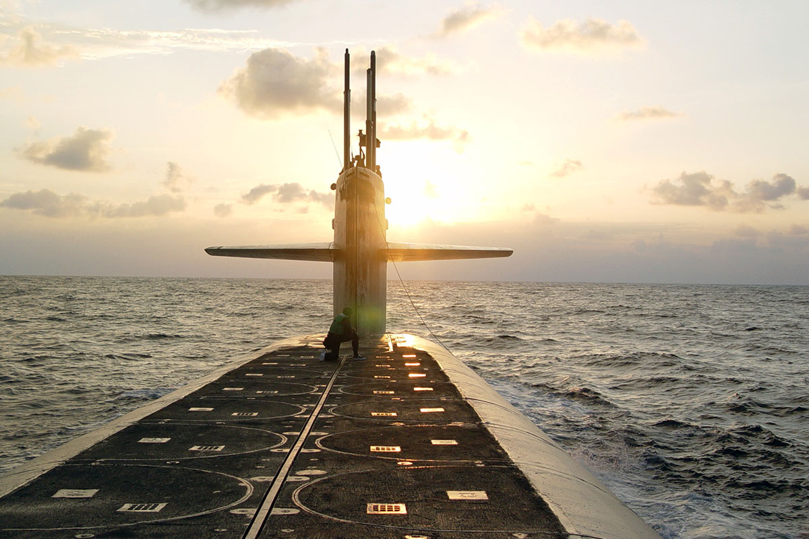

Name: Wesley McDougal
Contact Information:
Email: wesley.mcdougal@ku.edu
Phone Number: 785-727-3098
About Me:
Graduated from Killeen High School in Texas on May 2012
Enlisted into the U.S. Navy on March 2013
Have stationed in both Atlantic and Pacific U.S. coasts, Hawaii, and Guam.
Experience in nuclear electrical engineering and radio communications on submarines
Honorably discharged from the U.S Navy on March 2019, and moved to Lawrence, KS
Began pursuing undergraduate degree at KU on August 2019
Switched from Microbiology to Computer Science on 2022
Still exploring potential career fields, like ones that involves electronic prosthetics
The video below can give you an insight of what I would like to do!
Return to Home Page